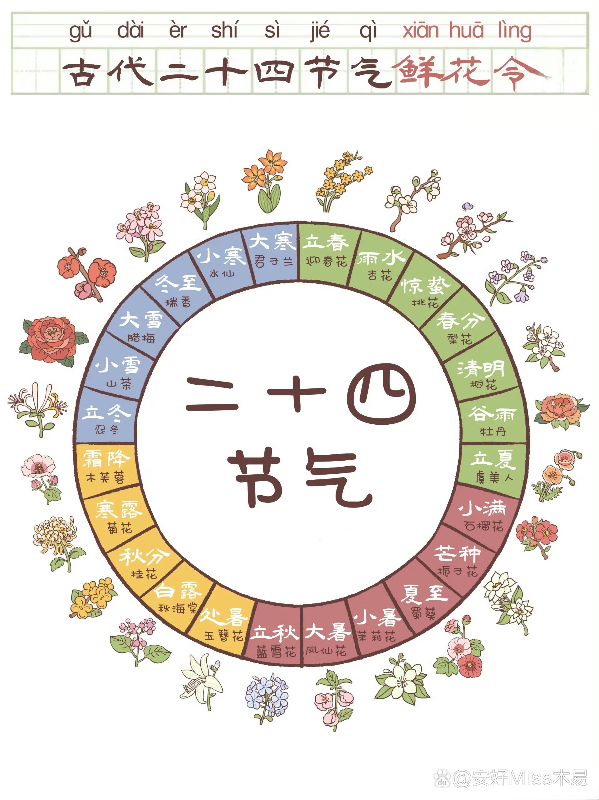

二十四节气的起源
The origin of the Twenty-Four Solar Terms
二十四节气发源于中国古代，是华夏先民凭借对太阳周年运动的细致观察，洞悉一年中时令、气候、物候等方面的变化规律而形成的知识体系与社会实践。早在春秋战国时期，古代贤哲就依据太阳在黄道上的位置来确定节气。至秦汉时期，二十四节气已基本确立，并逐步成为指导农业生产和日常生活的重要准则。它彰显了中国古代人民对自然规律的深刻认知与尊崇，是中华民族传统文化的璀璨瑰宝，对中国乃至全球的农业、气象、文化等领域均产生了深远影响。
The Twenty - Four Solar Terms originated in ancient China. It is a knowledge system and social practice developed by the ancient Chinese through meticulous observation of the sun's annual motion and understanding of the changing laws of seasons, climates, and phenologies throughout the year. As early as the Spring and Autumn and Warring States periods, ancient sages began to determine the solar terms based on the sun's position on the ecliptic. By the Qin and Han dynasties, the Twenty - Four Solar Terms had been basically established and gradually became an important guide for agricultural production and daily life. It reflects the profound understanding and respect for the laws of nature by the ancient Chinese people. It is a precious gem of traditional Chinese culture and has had a profound impact on the agricultural, meteorological, cultural and other fields in China and even around the world.

二十四节气的分类依据
二十四节气的分类主要依据太阳在黄道上的位置，同时兼顾气候变化、物候现象等因素。具体情况如下：
The classification of the Twenty - Four Solar Terms is mainly based on the sun's position on the ecliptic, while also taking into account factors such as climate change and phenological phenomena. The details are as follows:
天文因素：地球绕太阳公转的轨道被称为黄道，太阳在黄道上的位置不断变动。古人将黄道划分为 360 度，以春分点为 0 度，每 15 度设定为一个节气，如此便形成了二十四节气。例如，当太阳到达黄经 0 度时为春分，到达黄经 30 度时为清明，依此类推。这清晰地体现了季节的更替以及太阳高度角的变化，精准反映了天文季节的特征。
Astronomical factors: The orbit of the Earth's revolution around the Sun is called the ecliptic, and the sun's position on the ecliptic is constantly changing. The ancients divided the ecliptic into 360 degrees, with the vernal equinox point as 0 degrees, and each 15 degrees as a solar term, thus forming the Twenty - Four Solar Terms. For example, when the Sun reaches 0 degrees of ecliptic longitude, it is the Spring Equinox, and when it reaches 30 degrees of ecliptic longitude, it is Qingming, and so on. This clearly reflects the change of seasons and the variation of the solar altitude angle, accurately demonstrating the characteristics of astronomical seasons.
气候因素：每个节气都对应着特定的气候特点。比如，立春、立夏、立秋、立冬分别标志着春、夏、秋、冬四季的起始，气温随之逐渐变化；小暑、大暑、处暑等节气与炎热天气紧密相关，反映了气温的高低和变化趋势；而小寒、大寒则是一年中最为寒冷的时段，体现了寒冷程度的差异。
Climatic factors: Each solar term corresponds to specific climatic characteristics. For instance, the Beginning of Spring, the Beginning of Summer, the Beginning of Autumn, and the Beginning of Winter respectively mark the start of spring, summer, autumn, and winter, and the temperature gradually changes. Solar terms such as Minor Heat, Major Heat, and End of Heat are closely related to hot weather, reflecting the level and changing trend of temperature. While Minor Cold and Major Cold are the coldest periods of the year, reflecting the difference in the degree of coldness.
物候因素：物候指的是动植物等随着气候变化而产生的相应变化。二十四节气也依据物候现象进行了细致分类。例如，惊蛰标志着春雷初响，唤醒了蛰伏在土中冬眠的动物；谷雨时节，降雨量增多，谷类作物得以茁壮成长；芒种意味着有芒的麦子即将收割，有芒的稻子可以播种，充分反映了农作物的生长规律和农事活动的节奏。
Phenological factors: Phenology refers to the corresponding changes of animals, plants, etc. with the change of climate. The Twenty - Four Solar Terms are also carefully classified according to phenological phenomena. For example, Jingzhe (the Waking of Insects) marks the beginning of the spring thunder, which wakes up the hibernating animals in the soil. Guyu (Grain Rain) indicates that at this time, the rainfall increases, and cereal crops can thrive. Mangzhong (Grain in Ear) means that the wheat with awns should be harvested soon, and the rice with awns can be planted, fully reflecting the growth of crops and the rhythm of agricultural activities.
